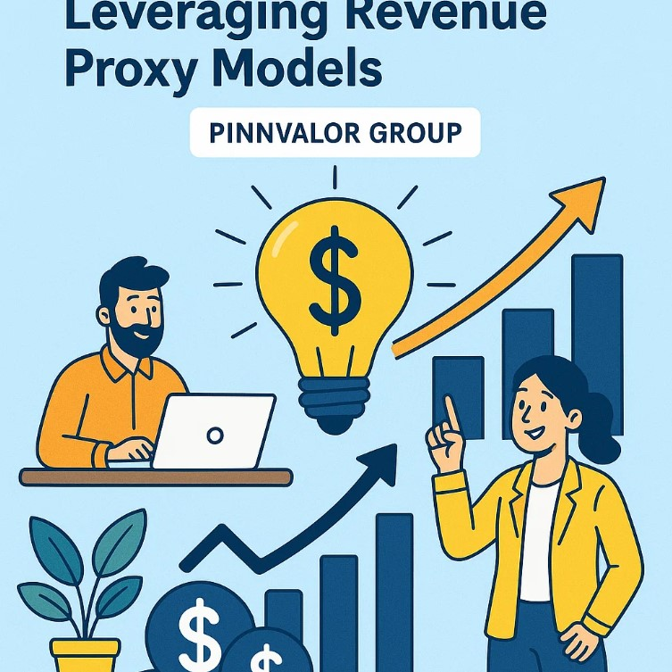

Valuing Early-Stage Startups – Revenue Proxy Models
Valuing early-stage startups is one of the most challenging tasks in finance and venture capital. Unlike mature companies, startups often lack consistent revenue, established market presence, or historical financial data. Traditional valuation methods, such as Discounted Cash Flow (DCF) or comparable company analysis, often fall short. This is where Revenue Proxy Models come in—a practical approach that uses alternative indicators to estimate a startup’s potential revenue and overall valuation.
What are the risks of relying solely on proxy-based valuation?
Revenue proxy models turn engagement, users, and activity into a roadmap for future value, helping investors see beyond the lack of revenue.
What Are Revenue Proxy Models?
Revenue proxy models are valuation tools that rely on indirect metrics or proxies to estimate a startup’s revenue potential. Since early-stage startups may not have meaningful revenue yet, investors use proxies such as:
- User base growth: Number of active users or subscribers.
- Engagement metrics: Frequency of usage, session times, retention rates.
- Transaction volume: For marketplaces or platforms, the total number of transactions or gross merchandise value (GMV).
- Industry benchmarks: Typical revenue per user (RPU) or conversion rates in similar startups or sectors.
The underlying idea is simple: while actual revenue might be minimal or non-existent, these proxies can give a strong signal about the startup’s ability to generate future revenue.
Why Use Revenue Proxy Models?
Early-stage startups often operate in a pre-revenue or low-revenue phase, making traditional financial models impractical. Revenue proxy models provide several benefits:
- Objective estimation: They give a structured way to assign value based on measurable metrics.
- Benchmarking: They allow investors to compare startups within the same industry using common proxies.
- Growth-oriented focus: They highlight the startup’s growth potential rather than past performance.
- Risk assessment: They help in identifying whether the current growth trajectory is sustainable.
Common Revenue Proxy Models
Several approaches fall under the revenue proxy methodology. Here are a few widely used models:
1. User-Based Multiples
This method estimates a startup’s value based on its active user base. The formula is:
Startup Value = Active Users × Revenue per User × Multiple
- Revenue per User (RPU) is usually derived from industry benchmarks.
- Multiple reflects market sentiment, growth potential, and risk.
Example:
A SaaS startup has 50,000 active users. The industry RPU is $10/month, and the multiple applied is 12.
Value = 50,000 × 10 × 12 = $6,000,000
2. Engagement or Activity Metrics
For platforms where user activity drives value (social networks, marketplaces), engagement can be a stronger predictor than user count. Metrics like daily active users (DAU), monthly active users (MAU), or retention rates are used as proxies to forecast future revenue.
3. Transaction-Based Models
For marketplace startups, GMV or transaction volume can serve as a proxy for revenue. Here, investors often apply an industry-standard take rate (the percentage the platform earns per transaction) to estimate revenue potential.
Example:
A marketplace facilitates $1 million in transactions monthly. With a 10% take rate and a 12× multiple:
Value = 1,000,000 × 0.10 × 12 = $1,200,000
4. Comparable Startup Benchmarks
Sometimes, investors look at similar startups at a similar stage and use their revenue or valuation multiples as proxies. This approach requires careful adjustment for growth rates, market size, and product differentiation.
Challenges and Limitations
While revenue proxy models are powerful, they come with limitations:
- Assumption-driven: These models rely heavily on assumptions about growth rates, user conversion, and retention.
- Sector-specific: Proxies vary widely between industries; what works for SaaS may not apply to marketplaces or consumer apps.
- Overestimation risk: Overvaluing user engagement or transaction volumes without considering monetization challenges can lead to inflated valuations.
Best Practices for Using Revenue Proxy Models
- Combine multiple proxies: Use a mix of user, engagement, and transaction metrics to get a balanced view.
- Benchmark against industry standards: Always compare proxies with similar startups to ensure realism.
- Adjust for risk: Apply conservative multiples for startups in highly uncertain markets.
- Update frequently: As the startup grows, actual revenue data should gradually replace proxy-based estimates.
Conclusion
Valuing early-stage startups is as much art as it is science. Revenue proxy models provide a practical framework for investors and founders to quantify growth potential in the absence of meaningful revenue. While they require careful assumptions and industry knowledge, these models allow startups to be compared objectively and investors to make informed funding decisions.
In the fast-paced world of startups, a solid revenue proxy model can be the difference between spotting the next unicorn and missing an opportunity.